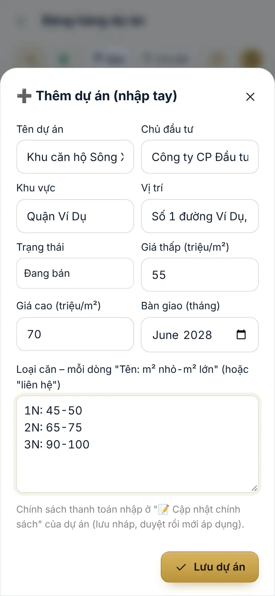
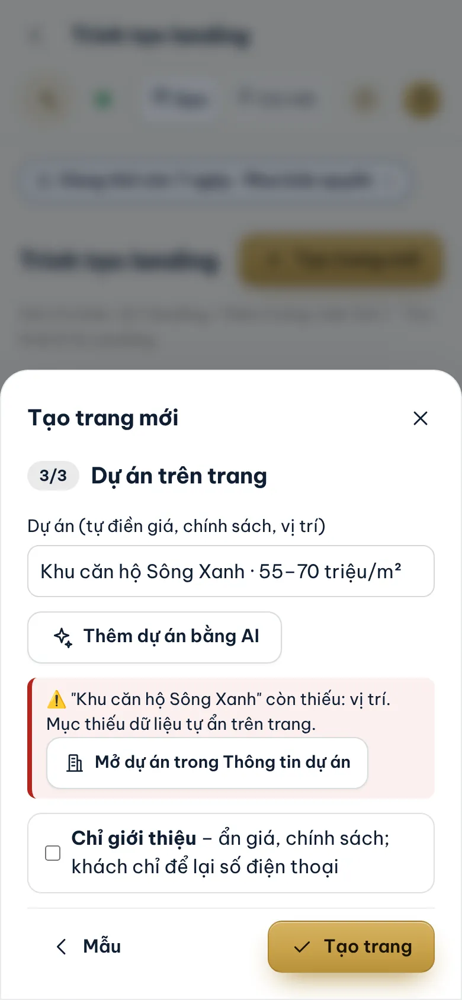
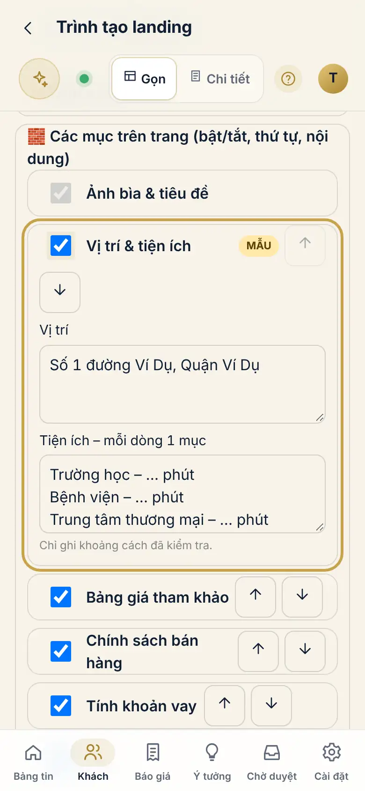
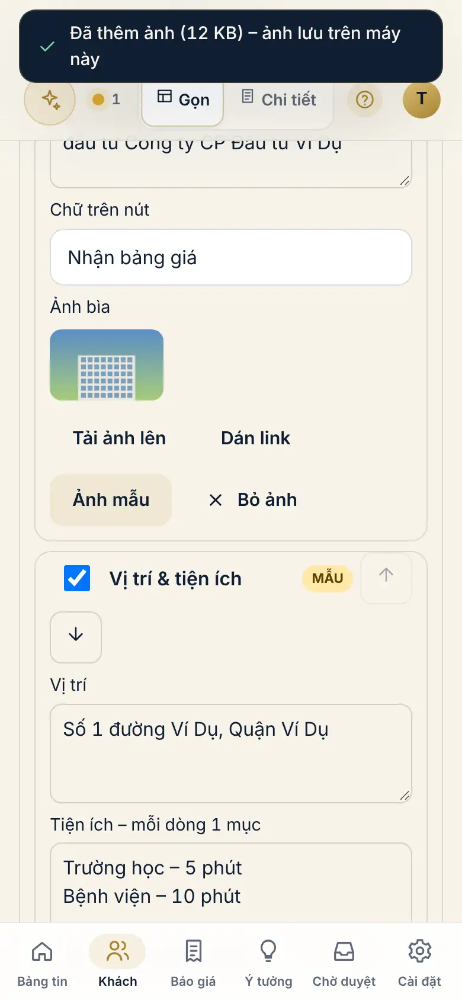
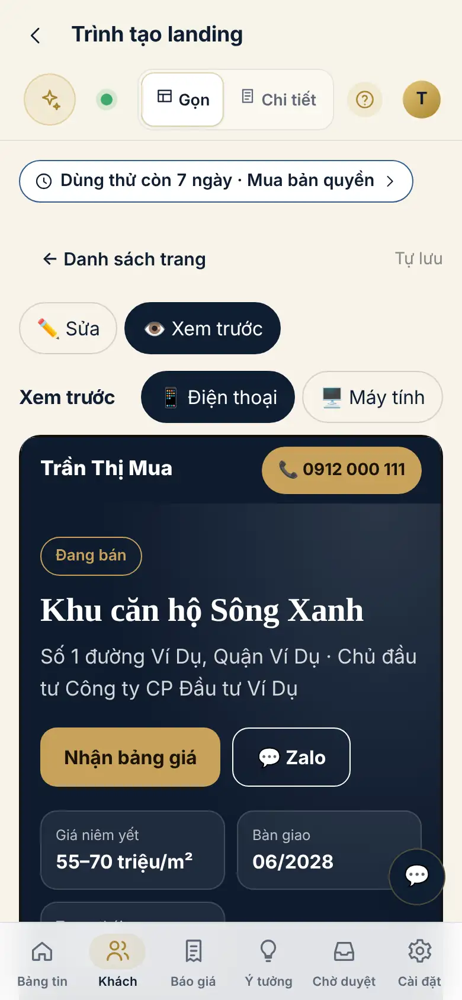
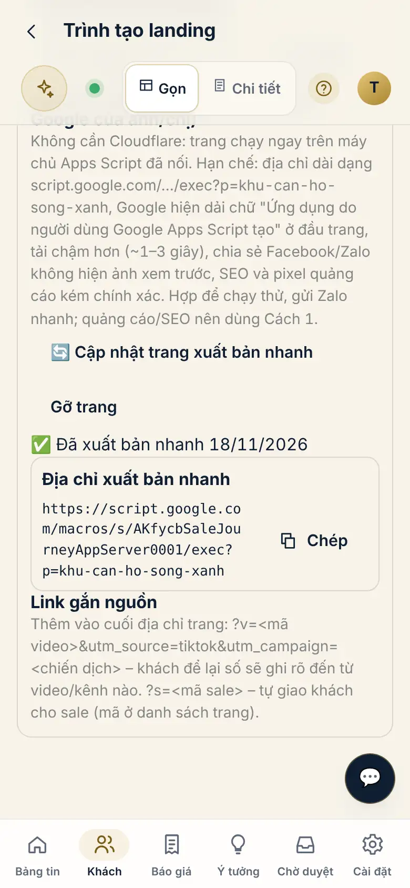

Tạo 1 landing và đăng
Landing là trang giới thiệu dự án để chạy quảng cáo hoặc gửi Zalo. Khách để lại số trên trang → về thẳng danh sách khách của anh/chị (và báo Telegram nếu đã nối).
Gói Cơ bản đăng được 1 landing. Trang đang có sửa, đăng lại, gỡ được bình thường; muốn làm trang khác thì sửa trang đang có, hoặc xoá rồi tạo trang mới.
Trang tạo từ Lên căn › Đăng lên trang không tính vào giới hạn này.
Đã có landing làm ở nơi khác (LadiPage, WordPress…) đang chạy quảng cáo? Xem Nối landing đang chạy quảng cáo.
Có nhiều trang hơn mức (đã tạo lúc có gói mở rộng): màn ghi rõ, vd "4 trang, Gói Cơ bản đăng được 1" – các trang vẫn còn, sửa được.
Bước 0. Có dự án thật trong Thông tin dự án
Trang lấy giá, vị trí, loại căn từ Thông tin dự án (trước gọi là Bảng hàng). Chưa có dự án nào? Trong hộp Tạo trang mới bấm Thêm dự án, thêm xong quay lại đây.
- Vào Báo giá › 🏢 Thông tin dự án, bấm + Thêm dự án.
- Gõ tên dự án, bấm Thêm tay.
- Điền chủ đầu tư, khu vực, vị trí, trạng thái, giá thấp/cao (triệu/m²), tháng bàn giao, loại căn (mỗi dòng
2N: 65-75). - Bấm Lưu dự án.

Bước 1. Tạo trang
- Vào Khách › 🌐 Trình tạo landing, bấm + Tạo trang mới.
- 1/3 Trang này để làm gì? – chọn 1 hoặc nhiều mục tiêu (vd Phễu lọc khách mua dự án mới), bấm Tiếp: chọn mẫu.
- 2/3 Chọn mẫu – mẫu có nhãn ⭐ Hợp mục tiêu nằm trên cùng. Muốn mẫu đơn giản (dự án, ký gửi 1 căn, sự kiện mở bán, trang cá nhân) thì mở Mẫu cơ bản. Bấm Tiếp: chọn dự án.
- 3/3 Dự án trên trang – chọn dự án trong Thông tin dự án. Dòng ⚠️ cho biết dự án còn thiếu gì (vd vị trí) – bấm Mở dự án trong Thông tin dự án để bổ sung, hoặc cứ tạo: mục thiếu dữ liệu tự ẩn trên trang.
- Bấm Tạo trang.
Bước 3/3 – chọn dự án rồi bấm Tạo trang:

Bước 2. Sửa các mục còn chữ "Mẫu"
- Mở 🚀 Xuất bản. Mục nào có dấu ⛔ phải sửa trước khi đăng.
- Bấm Sửa cạnh từng dòng ⛔ – app đưa tới đúng chỗ cần sửa.
- Mục có nhãn MẪU (vd Vị trí & tiện ích): gõ lại nội dung thật, hoặc bỏ tick để tắt mục.

- Ảnh minh hoạ: bấm Tải ảnh lên (ảnh tự chụp), Dán link, hoặc Bỏ ảnh.

- Mục có nhãn MẪU (vd Vị trí & tiện ích): gõ lại nội dung thật, hoặc bỏ tick để tắt mục.
- Hết dòng ⛔ là đăng được. Dòng ⚠️ chỉ là lưu ý.
Trang Tự lưu – không cần bấm lưu.
Bước 3. Xem trước
Bấm 👁️ Xem trước, chọn 📱 Điện thoại hoặc 🖥️ Máy tính. Bấm ✏️ Sửa để quay lại.

Bước 4. Đăng
Trong 🚀 Xuất bản chọn một cách:
- ⚡ Xuất bản nhanh (Cách 2): bấm một lần, trang chạy ngay trên máy chủ Google của anh/chị. App hiện ✅ Đã xuất bản nhanh và địa chỉ trang. Địa chỉ dài, đầu trang có dòng chữ của Google, tải chậm hơn – hợp để chạy thử, gửi Zalo.
- ⬇️ Tải gói trang (.zip) (Cách 1): tải tệp
.zip, làm theo tệpHUONG_DAN_DUA_LEN_MANG.txtbên trong để đưa lên Cloudflare Pages (miễn phí) hoặc tên miền riêng. Hợp để chạy quảng cáo, SEO.

Sửa trang sau khi đăng: sửa xong bấm 🔄 Cập nhật trang xuất bản nhanh (hoặc tải lại .zip).
Gỡ trang: bấm Gỡ trang.
Nếu app của anh/chị mở ở địa chỉ riêng dạng tenkhach.bdsstudio.app và bên bán đã bật dịch vụ, màn này có thêm Cách 3 – Đăng lên địa chỉ app của tôi. Cách này chưa kiểm được trong bản hướng dẫn này – làm theo chữ trên màn.
Giao khách cho đúng sale
Chỉ bản Công ty. Thêm ?s=<mã sale> vào cuối địa chỉ trang. Mã từng người ở mục Mã riêng từng sale trong danh sách trang. Bản Cá nhân không có mục này (chỉ có 1 người dùng).
← Mục lục · Tiếp: Ý tưởng nội dung